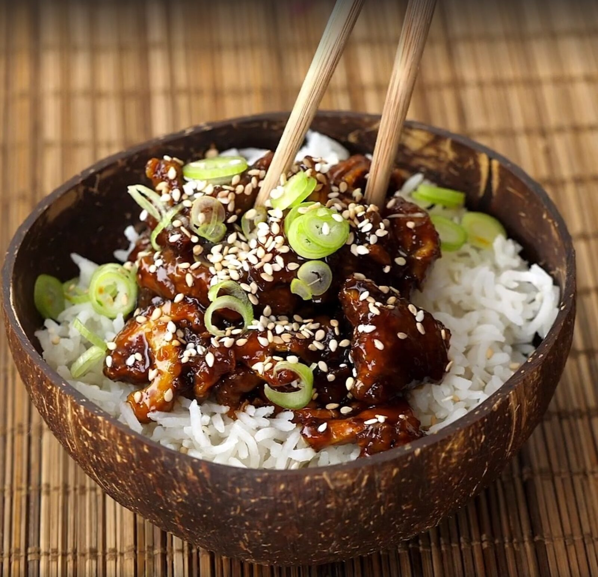

Sticky Shitake Mushrooms

Description
This delicious vegan dish will make any mushroom hater immediately change how they feel about this lovely
edible fungus. It brings together sweetness and a mild heat in an asian style that brings to mind a favorite
Chinese takeout staple. It is also incredibly quick and easy to prepare for those nights when you are short on time.
Try it today. You will be glad you did!
Ingredients
- 1/4 cup grapeseed oil
- 2 cups shitake mushrooms, thickly sliced
- 1/4 cup cornstarch
- Tbsp sesame oil
- 2 garlic cloves, minced
- inch ginger, minced
- 2 Tbsp brown sugar
- 2 Tbsp rice wine vinegar
- Tsp cornstarch
- 1/4 cup soy sauce
- Tsp Siracha
Steps
- Put shitake mushrooms in bowl with cornstarch and mix until fully covered.
- Warm grapeseed oil in pan, turned to medium heat, then add mushrooms and fry until cooked through and crispy
- Remove cooked mushrooms and use a paper towel to wipe out any remaining oil. Turn heat down to low.
- Add sesame oil along with garlic and ginger and cook until fragrant.
- Add brown sugar and stir until caramelised.
- Add cornstarch, soy sauce, and rice wine vinegar. Stir them until sauce has thickened slightly.
- Place mushrooms in finished sauce and stir until thoroughly coated. Serve over rice.